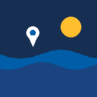

Activa el modo de observación
Permite que el teléfono compruebe ubicación, orientación, cámara y micrófono. Puedes continuar aunque alguna función no esté disponible.

Cuaderno comunitario de observación costera
Tus observaciones aparecen aquí cuando tienen posición registrada.
Registra lo que ves. No necesitas explicar la causa.
Se solicitarán solamente los permisos necesarios. Si un sensor no está disponible, el registro puede continuar.
Consulta las observaciones guardadas en este dispositivo.
Prepara una copia de los registros para conservarlos o compartirlos.
Elige qué registros y qué contenidos quieres compartir. COSTA VIVA prepara el paquete y el celular te permite escoger WhatsApp, correo, Quick Share, Bluetooth u otra aplicación disponible.
Guía breve para usar COSTA VIVA en campo.
Permite que el teléfono compruebe ubicación, orientación, cámara y micrófono. Puedes continuar aunque alguna función no esté disponible.
Describe lo que está ocurriendo sin necesidad de explicar la causa.
Añade fotografías, vídeo, audio o una medición sencilla. Las fotografías documentadas conservan los datos disponibles del dispositivo.
Los puntos permanentes permiten comparar observaciones realizadas en distintos momentos.
COSTA VIVA es una herramienta de ciencia popular. Una cinta, dos puntos de referencia y una forma constante de medir pueden producir una serie útil si siempre se repite el mismo procedimiento.
No importa medir muchas cosas. Importa medir siempre la misma cosa, desde la misma referencia, por la misma línea y dejando registrado cómo se hizo.
El borde del agua se mueve con la marea y el oleaje. Registra siempre la hora y el estado observado del mar. Para comparar dos medidas procura realizar las visitas en condiciones de marea semejantes. Una diferencia medida en horas o estados de marea distintos no debe interpretarse directamente como erosión.
El GPS ayuda a localizar la observación. No tiene la precisión de un equipo profesional. COSTA VIVA conserva la precisión informada por el dispositivo para evitar aparentar una exactitud que no existe.
Puedes elegir Mapa, Satélite o Sin mapa. El mapa satelital ayuda a reconocer la costa, pero la imagen puede corresponder a otra fecha y no debe usarse por sí sola para medir cuánto retrocedió la línea de costa.
Puedes compartir con tu comunidad, otra comunidad, un investigador, una institución u otra persona. Antes de enviar, eliges los registros y también si incluyes coordenadas, notas, mediciones, fotografías, vídeos o audios.
El paquete se prepara en el celular. Después Android, iOS o el navegador muestran las aplicaciones disponibles para enviarlo. COSTA VIVA no decide el destinatario ni recibe una copia.
Atención. Algunos archivos originales de cámara o vídeo pueden contener metadatos creados por el propio dispositivo. Si una localización es sensible, revisa también los archivos multimedia antes de compartirlos.
Registrar información no significa entregarla. COSTA VIVA guarda los registros primero en este dispositivo y no los envía automáticamente a investigadores, universidades o instituciones.
Mientras no los exportes o compartas, permanecen en el almacenamiento local de este dispositivo. Recuerda que una persona con acceso al teléfono o al perfil del navegador podría acceder a ellos.
No. El autor de la herramienta, una universidad o cualquier otra organización no recibe automáticamente tus coordenadas, fotografías, vídeos, audios, notas o mediciones.
No. La comunidad decide si conserva, exporta o comparte los registros. Si alguien solicita utilizarlos, es razonable preguntar para qué se usarán, quién tendrá acceso y qué beneficio o devolución recibirá la comunidad.
COSTA VIVA ayuda a producir y organizar registros. No convierte al desarrollador, al investigador ni a una institución en propietario automático de los datos de la comunidad.
En un navegador compatible utiliza Instalar o Añadir a pantalla de inicio. Después podrás abrir COSTA VIVA como una aplicación.
Para documentar una observación necesitamos comprobar algunas funciones del celular. Los registros se guardan primero en este dispositivo.
La instalación permite abrir COSTA VIVA desde la pantalla principal y facilita el uso en campo.
Tu navegador permite instalar COSTA VIVA directamente.
El nombre exacto de la opción puede variar según el navegador y el teléfono.
Herramienta abierta de ciencia popular para observación comunitaria de la costa
COSTA VIVA nace para que comunidades con medios limitados puedan documentar cambios de su costa de forma ordenada, repetible y verificable usando celulares comunes y métodos sencillos de campo. La herramienta ayuda a conservar qué se observó, dónde, cuándo, cómo se midió y qué evidencia quedó registrada.
La sofisticación está en el método y no en exigir equipos costosos. Un registro comunitario gana valor cuando conserva el procedimiento, la incertidumbre, la fecha, la posición disponible, las fotografías, las notas y las mediciones repetidas. COSTA VIVA busca hacer posible ese trabajo sin convertir un celular en un instrumento profesional que no es.
COSTA VIVA surge a partir del trabajo realizado junto a comunidades Wayuu de Arroyo Guerrero, en La Guajira colombiana, donde la erosión costera y otros cambios ambientales hacían necesario documentar de forma continuada lo que estaba ocurriendo en el territorio.
Con la colaboración de Clarena Fonseca y el trabajo desarrollado con las comunidades se impulsó el uso de fotografías, vídeos, recorridos, localización mediante GPS y observaciones repetidas usando principalmente los teléfonos celulares disponibles.
De esa experiencia nace la idea de una herramienta de ciencia popular capaz de ayudar a crear puntos de observación, repetir mediciones, conservar evidencias y construir una memoria territorial verificable sin exigir instrumentación costosa.
La falta de equipos profesionales no debe impedir que una comunidad pueda observar, medir, documentar y conservar de forma ordenada los cambios de su propio territorio.
La erosión costera, las inundaciones y la pérdida progresiva de terreno pueden afectar viviendas, caminos, espacios culturales, actividades económicas y otras condiciones necesarias para permanecer en un territorio.
Cuando estos procesos contribuyen a que las personas tengan que abandonar temporal o permanentemente un lugar pueden formar parte de dinámicas de desplazamiento asociadas a factores climáticos y ambientales.
COSTA VIVA no determina por sí misma que exista desplazamiento climático ni asigna una condición jurídica a las personas. Su función es documentar cambios, impactos y series temporales que puedan ayudar a comprender lo ocurrido.
La iniciativa se alinea principalmente con los siguientes ODS sin implicar reconocimiento o certificación oficial por parte de Naciones Unidas.
Apoya la observación local de impactos ambientales y la construcción de memoria útil para procesos de adaptación.
Ayuda a documentar amenazas sobre viviendas, caminos, espacios comunitarios y patrimonio territorial.
Busca reducir la brecha entre quienes disponen de instrumentación especializada y comunidades que necesitan registrar su territorio con medios limitados.
Favorece la observación de transformaciones en la franja costera y en los espacios de interacción entre el mar y las comunidades.
Facilita conservar evidencias comunitarias ordenadas que pueden apoyar una participación informada ante instituciones.
Puede facilitar colaboración entre comunidades, universidades, organizaciones sociales, investigadores y administraciones públicas.
COSTA VIVA está diseñada para reducir la extracción automática de información producida por las comunidades. No existe un repositorio central de registros comunitarios ni una cuenta obligatoria que envíe los datos de campo a los responsables del proyecto.
Los registros no pertenecen a COSTA VIVA por haber sido creados con la aplicación. La comunidad y las personas que generan la información deciden si la conservan, exportan o comparten.
El diseño toma como referencia la orientación de los principios CARE para la gobernanza de datos indígenas, centrados en beneficio colectivo, autoridad para controlar, responsabilidad y ética.
OCAP es un marco específico de las First Nations de Canadá sobre propiedad, control, acceso y posesión. COSTA VIVA lo reconoce como referencia relacionada, pero no afirma certificación, adopción formal ni cumplimiento OCAP.
Estos marcos pertenecen a contextos y pueblos concretos. Su mención sirve para transparentar referencias éticas y no sustituye los acuerdos propios que cada comunidad establezca sobre sus datos.
La afiliación identifica el marco académico de trabajo del autor. No implica por sí sola certificación institucional, financiación, aval oficial ni sustitución de los protocolos técnicos de las autoridades competentes.
El software de COSTA VIVA se publica bajo la licencia MIT, que permite usar, estudiar, modificar y redistribuir el código conservando el aviso de copyright y la licencia.
Leer licencia MITLos textos de ayuda y materiales metodológicos propios se ofrecen bajo CC BY 4.0, una licencia más apropiada para contenidos, siempre que se reconozca la autoría.
Ver condiciones de los contenidosCOSTA VIVA ayuda a documentar observaciones y series comunitarias. No sustituye levantamientos topográficos, GNSS profesional, estudios oceanográficos, peritajes, sistemas oficiales de alerta ni decisiones de protección civil. Los registros deben interpretarse teniendo en cuenta el método utilizado y su incertidumbre.
Referencia recomendada para la primera versión pública archivada del software.
Busón Buesa, C. (2026). COSTA VIVA (Version v0.5.0) [Computer software]. Zenodo.
Esta referencia identifica la versión v0.5.0 archivada en Zenodo. Las versiones futuras pueden disponer de su propio registro de versión.